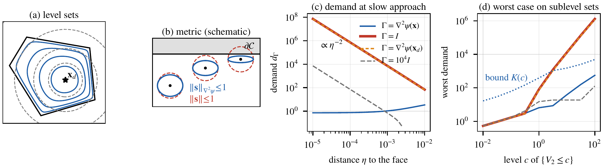

A Bregman divergence $D_\psi(x_d, x)$ of a barrier-type convex function $\psi$ is a control Lyapunov function whose sublevel sets lie inside the constraint set, so a single Lyapunov constraint certifies both convergence to $x_d$ and safety. At relative degree two, as for mechanical systems, backstepping adds a velocity-error term weighted by a metric; we show that this metric decides whether the acceleration needed to satisfy the constraint stays bounded up to the boundary. If $\psi$ is a quadratic plus a weighted self-concordant barrier and the metric is the Hessian of $\psi$, the needed acceleration has an explicit bound that depends on the state only through the Lyapunov value, not on the distance to the boundary; under an acceleration bound this gives recursive feasibility, invariance, and exponential convergence on explicit sublevel sets. For every constant metric, of any scale, the needed acceleration grows like $1/\eta^2$ at slowly moving states at distance $\eta$ from a polytope face. On a double integrator, the Hessian metric leaves the set only from states that no bounded-acceleration controller can stop in time. On a simulated 7-DoF manipulator started near the boundary, constant metrics left the set in up to 39 % of trials, while the Hessian metric kept a positive margin at every logged step.

(a) For a log-barrier $\psi$ of a polytope, the sublevel sets of the Bregman CLF $V = D_\psi(x_d, x)$ lie inside the set, so keeping $V$ from increasing keeps the state safe. Near a face, however, the gradient of $V$ grows like $1/\eta^2$. (b) At relative degree two, backstepping adds the velocity error $s$, measured in a metric $\Gamma$: $V_2 = D_\psi(x_d, x) + \tfrac12 s^\top \Gamma s$. The control must cancel a cross term between the steep gradient and $s$. (c) With a constant $\Gamma$ this costs an acceleration that grows like $1/\eta^2$, even when the state approaches the face slowly. With $\Gamma = \nabla^2\psi(x)$ the curvature appears on both sides and cancels: the needed acceleration stays bounded up to the boundary. (d) Worst case over sublevel sets, with the explicit bound of Theorem 2.
Theorems 1 and 2
With the Hessian metric, the certificate decreases on the whole set, and the acceleration it needs has an explicit bound that does not depend on the distance to the boundary.
Proposition 1
For every constant metric, of any scale, the needed acceleration grows like $1/\eta^2$ at slowly approaching states near a polytope face.
Corollary 1
Under an acceleration bound, the Hessian metric gives recursive feasibility, invariance, and exponential convergence on explicit sublevel sets.
In practice
The constraint is one linear row of an inverse-dynamics QP. A control step of the manipulator controller takes 0.16 ms in median (at most 0.30 ms) on one unloaded CPU core.
One of the 100 starts of the study, under the acceleration bound $\|a\| \le 30$. Straight braking would stop this start well inside the set, so it is recoverable. The constant-metric law runs into infeasible steps and leaves the set; the Hessian-metric law turns and converges. 2× slow motion.
| Metric $\Gamma$ | $\bar a = 10$ | 30 | 100 | 1000 | 3000 |
|---|---|---|---|---|---|
| $\nabla^2\psi(x)$ (Hessian) | 14 / 10 | 6 / 2 | 1 / 0 | 0 / 0 | 0 / 0 |
| $I$ | 28 / 23 | 20 / 15 | 10 / 6 | 1 / 0 | 0 / 0 |
| $\nabla^2\psi(x_d)$ | 28 / 26 | 21 / 17 | 10 / 7 | 1 / 0 | 0 / 0 |
| $10^2 I$ | 38 / 38 | 37 / 37 | 36 / 36 | 24 / 25 | 16 / 16 |
| $10^4 I$ | 35 / 38 | 25 / 38 | 16 / 38 | 8 / 38 | 4 / 37 |
| Hessian trials certified by the closed-form bound $K$ | 0 | 0 | 3 | 44 | 99 |
| Hessian trials certified with the sampled worst demand | 23 | 66 | 97 | 99 | 100 |
A simulated KUKA iiwa 14 in MuJoCo runs an inverse-dynamics QP at 1 kHz. The end effector must stay in a random 3-D polytope or a ball. Each metric runs with the rate constraint and with the level constraint, in three conditions: nominal, torque bounds reduced to 30 %, and starts near the boundary with the arm moving toward it. These runs are empirical: the assumptions of Corollary 1 were not verified for them.
A second near-boundary start (seed 19). Constant metric: outside by 63 mm. Hessian metric: inside at every logged step.
| Metric | Constraint | Nominal | 30 % torque | Near boundary | Depth [mm] | |||
|---|---|---|---|---|---|---|---|---|
| inf. | out | inf. | out | inf. | out | |||
| $I$ | rate | 0.15 | 0 | 1.22 | 1 | 29.36 | 22 | 129 |
| level | 0.04 | 0 | 1.03 | 1 | 27.10 | 22 | 129 | |
| $\nabla^2\psi(x_d)$ | rate | 0.22 | 0 | 1.13 | 1 | 37.48 | 31 | 138 |
| level | 0.05 | 0 | 1.06 | 1 | 36.31 | 30 | 138 | |
| $\nabla^2\psi(x)$ (Hessian) | rate | 0.19 | 0 | 0.11 | 0 | 0.58 | 0 | 0 |
| level | 0.00 | 0 | 0.00 | 0 | 0.02 | 0 | 0 | |
In a benchmark of 4 scenarios with targets inside the set (120 trials), the Hessian-metric controller with the level constraint violated no keep-in, joint-position, or joint-velocity limit. A relaxed CLF with one exponential CBF per face left the set in 2 trials, with smoother torque. Inverse dynamics with per-face CBFs stayed in the set but exceeded joint limits in 11 trials, and was more accurate (median final error 0.12 against 0.30 mm).
What the experiments do not show.
@misc{bregmanclf2026,
title = {Bregman Control Lyapunov Functions: Hessian-Metric Backstepping for Convex State Constraints},
author = {Domrachev, Ivan and others},
year = {2026},
note = {Preprint},
url = {https://domrachev03.github.io/bregman-clf}
}